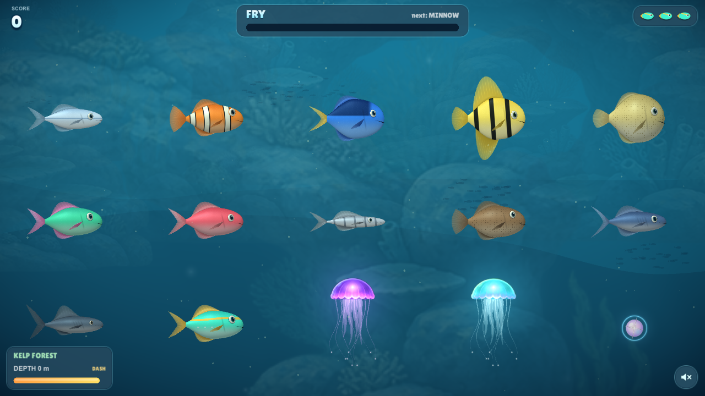
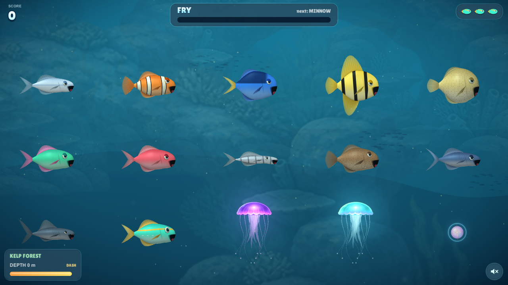

Streamlined bodies, stronger tail connections and flexible fins with thinner edges. Richer color, fine scales and softer reflections give the skin more depth. The improved face and mouth remain part of the 3D direction.
Left: previous 3D draft. Right: refined 3D. Matching four-second animation inputs.

